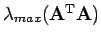
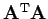

Inhalt Index DeskTop Bronstein
Lineare Algebra Matrizen Vektor- und Matrizennormen
Dabei wird mit  der größte Eigenwert der Matrix  bezeichnet.
Es läßt sich zeigen, daß die Matrizennorm (4.51) der Vektornorm (4.48) zugeordnet ist. Das gleiche gilt für (4.52) und (4.49) sowie (4.53) und (4.50).